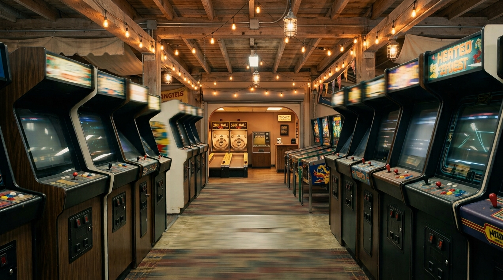

A game appears on a screen. Behind it is a physical and commercial world: chips, graphics processors, displays, controllers, cabinets, computers, networks, storefronts, studios, warehouses, repair benches, collectors and the people who build and maintain them.
AMERICAN GAME follows that world.
The subject is not game criticism, rankings or nostalgia. It is the material culture and infrastructure that allows games to exist in the first place.
Consoles, computers, controllers, arcades and games are already part of ordinary American life.
The engineering, manufacturing, computation, distribution and infrastructure behind play largely disappear from view.
Understanding the machine changes the way we understand the game—and the culture built around it.
The record extends from arcade cabinets and silicon to broadband, retail, collecting, repair and preservation.
What is physically built to make play possible.
What the machine actually does beneath the image.
The systems, tools and creative work that inhabit the machine.
How machines become networks, platforms and shared spaces.
The businesses and distribution systems that move the technology into people's hands.
Where the system becomes a physical environment.
Collecting, modification, communities, competition and memory.
The visible activity at the end of the entire system.
AMERICAN GAME is designed for readers who already understand games as part of American life, but want to see the machinery around them more clearly.
It speaks to players, builders, collectors, developers, engineers, historians, retailers and technically curious readers without requiring specialist knowledge.
The book is intended to remain useful after the particular game, console or hardware generation has passed.
Consoles, PCs, displays, controllers, processors, graphics, storage, peripherals and the physical technologies behind play.
Studios, publishers, programmers, artists, sound specialists and the working systems through which games are produced.
Operating systems, storefronts, online services, broadband, servers and the infrastructure of connected play.
Cabinets, operators, manufacturers, game rooms, arcades and the commercial spaces that shaped American gaming culture.
Stores, distributors, publishers, component suppliers and the systems that moved games from makers to players.
Collectors, repairers, archives, museums and specialists preserving machines, software and technical history.
Libraries, museums, archives, educational institutions and collections acquiring the finished publication.
Organizations whose participation helps bring the complete documentary record into physical form.
AMERICAN GAME is being developed as an independent editorial publication rather than as a corporate history, advertising vehicle or conventional game-industry coffee-table book.
That independence is important. It allows the book to move between manufacturers, developers, machines, places, technical systems and cultural practices according to the evidence rather than according to a single company's story.
Participation therefore supports the making of the publication without determining its editorial conclusions.
The finished book is intended to stand as a substantial physical record of American play: something to read, examine, keep and place in a serious collection.
The finished publication will bring together photography, research, technical evidence, documents, objects, places and first-hand knowledge into a coherent physical record.
Its visual language belongs to the documentary magazine tradition: photographs are evidence, objects are evidence, machines are evidence, and the accumulated details reveal the larger system.
The result is intended to remain valuable beyond any one console generation, software release or commercial cycle.
The game changes. The machine changes. The infrastructure changes. The record remains.